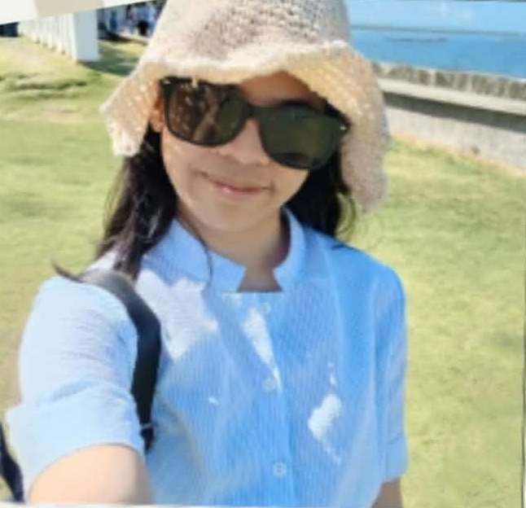

![]()
All About
Ysabelle
Welcome to my little corner. I love music, movies and wandering into new places.

Hello my name is Eunarda Ysabelle J. Ete but you can call me bell in short. i am a firts yr BSCS student at Bicol University..
★ Hello
★ About me
I'm someone who enjoys simple things that make me happy. I love listening to music wherever I go, and I also love dancing, like when I was in junior high school. I like playing musical instruments and doing simple artworks. In my free time, I enjoy reading, watching Hollywood movies and series, and exploring new places to experience something different.
★ Ask me about
Tap a question to open it.
★ Listening to music
I listen to music almost every day, no matter what I'm doing.
★ Dancing
I used to dance a lot back in junior high school, and I still enjoy it whenever I get the chance.
★ Hollywood movies and series
I love watching Hollywood movies and series, especially when the story keeps me interested.
★ Exploring places
I enjoy visiting new places and experiencing things I've never tried before.
★ My path into computing
I chose Computer Science because it was a redirection for me. I was still figuring out what I really wanted, and I still am. I am not ashamed of that. This course opened a door at the right time, and I decided to walk through it.
Every day I learn something new, and little by little it feels more like mine. I am proud of myself for trying, even when I don't have all the answers yet.
I believe that when you keep showing up, the path becomes clearer.
★ Favorites and little joys
These are the hobbies and go-to comforts that keep me balanced through busy days.
My favorites at a glance
| What I love | How it shows up | What it gives me |
|---|---|---|
| Music | Playing behind almost everything I do | Calm and a mood for any moment |
| Dancing | Whenever a song is too good to sit still for | Joy, and a break from my own head |
| Reading | Quiet time with a good story | New worlds and new ideas |
| Playing an instrument | Practice time, just me and the sound | Patience, and something I'm slowly getting better at |
| Hollywood series and movies | Evenings when I let the story take over | Rest, and plenty to talk about |
| Exploring places | Walks, trips and new corners to discover | the best photos |
★ Goals
In the next few years, I hope to understand computing well, not just to pass, but to really know what I am doing. I want to become more confident in my skills and to build projects that I can be proud of.
I also want to find the part of tech that fits me best, maybe something that mixes my love for stories and words with technology. Above all, I want to finish my studies and make my family proud, especially the people who believe in me. I know the road will not always be easy, but I will keep going, one step at a time. I am not behind. I am just growing at my own pace, and I am doing great.
★ Reflection
Building this page was though for me.i spent a lot of time on it allowed me to reflect on how far I have come since my initial About Me activity. I expanded my personal info, refined my color choices into a cozy pastel palette, and added new elements like an "Ask Me About" feature block and semantic card layouts. Designing this page with pure HTML and CSS taught me that combining intentional design with personal expression makes web development uniquely fulfilling.